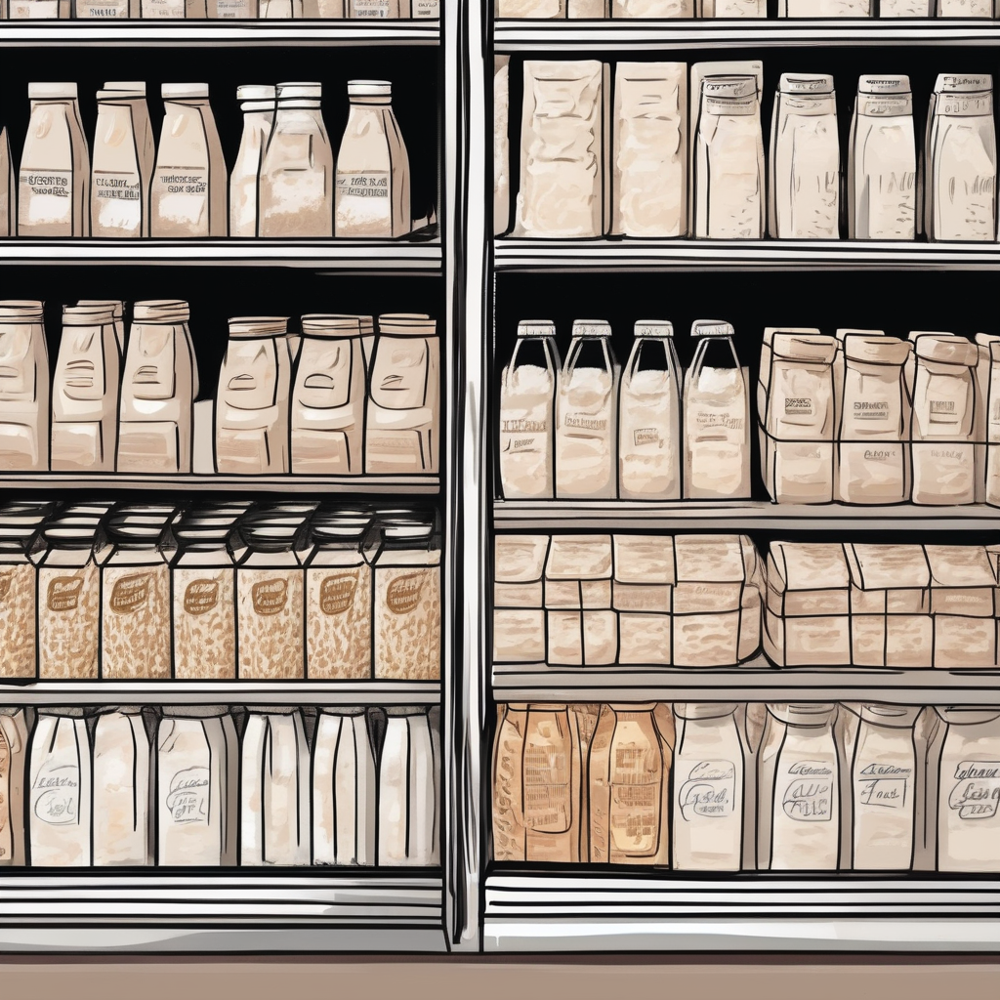
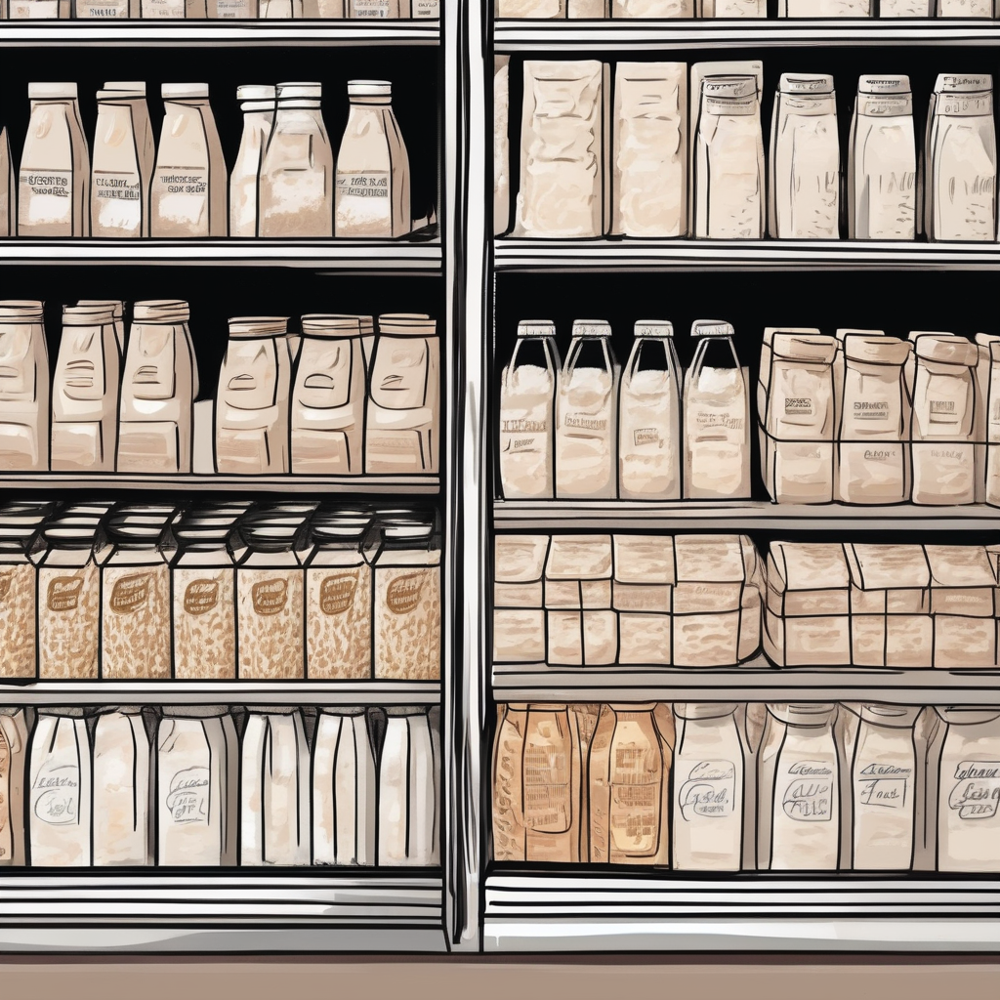
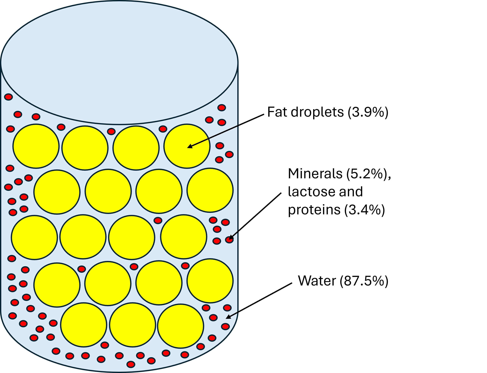
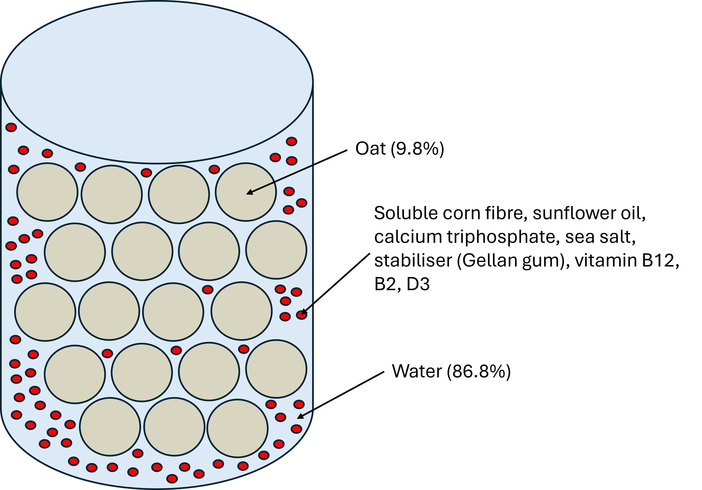

Cow’s milk is the cheaper option and looks as if it will continue to be as in the past year, the price of cows milk has in fact decreased with it being 5p less expensive per pint since Feburary 2023.
Rise in price of milk per unit share:
Although the price for plant-based milk is already higher than that of cow’s milk, it is set to increase by another 30p by 2028.
Full-fat cow’s milk is a great source of fat and protein and has a much higher nutritional value than oat milk or other milk-alternatives. It is however higher in calories so if you’re looking for a lower-calorie option it may not be for you. The ingredients found in cow's milk are just simply milk and water.
From our research, the most popular milk alternative brand is Alpro. Their original Oat Original drink is far less nutritionally rich than cow’s milk but is also lower in calories. The ingredients in oat milk are much more complicated. It contains stabilisers which are used to ensure that the oats don’t separate from the water. It also has added vitamins as oats do not contain as many micronutrients as natural cow’s milk has.
Cow’s milk is a natural emulsion meaning that the fat, lactase, minerals and protein naturally stay mixed and dispersed evenly throughout the water. When milk goes off, it separates meaning that the emulsion is no longer. This happens quicker than in plant based alternatives but no stabilisers are added.

Milk is an emulsion which means it is a colloidal dispersion of different micro and macro nutrients in water.

Naturally, oats would separate from the water in oat milk much faster than the components of cow’s milk. To counteract this, stabilisers are added to the mixture. In the Alpro Oat Original, Gellan gum is added which keeps the plant protein suspended in the milk. Anti-caking agent (tricalcium phosphate) is added to prevent lumps from forming and soluble corn fibre is added to thicken the liquid. The stabiliser in particular tends to mean that oat milk goes off less fast than cows milk.
From researching what is on supermarket’s shelves, we found that all cow’s milk on the shelves comes from farms in the UK. This means that it is not shipped far at all to get from the farm to your fridge.
Where are the farms located?:
Again looking at Alpro Oat Original drink, the brand says that their oat farms are all across Europe. Although this is not far, it is further than the origin of cow’s milk. When looking at other milk-alternatives supplied by the brand, some are from as far as Southeast Asia for their coconut milk.
One of the leading environmental concerns with cows milk is how much water the production of it uses. This is almost double as much as any plant-based alternative.

The main use of water in oat milk is watering the oats to allow them to grow. As you can see from this chart, oat milk uses less than 10% the amount of water that cow’s milk does and it is the second best plant-based milk in terms of water usage.